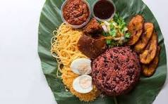

Waakye

Description
Waakye is a popular Ghanaian dish made from rice and beans cooked together with millet leaves,
giving it a distinctive reddish-brown color. It's often served with a variety of sides like fried plantains,
spaghetti, boiled eggs, salad, and a spicy pepper sauce. It's a flavorful and filling meal enjoyed across Ghana.
Ingredients
Steps to Prepare waakye
- First Bring water to a boil over intense heat
- Add beans and leave to boil until partially soft
- Add rice and leave to boil for sometime!, voila you're done